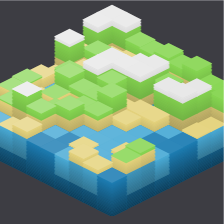

2d

3d
cherbcherb
scapescape
A random landscape generator that uses multiple layers of noise
(the number of layers marked by the resolution) of increasing grain sizes, melding them together
to create a map. Grain size is indicated by block size - which controls the range, or largest grain
size - and tends to affect the general size of land masses. Each base tile (tile size) absorbs proportionally
the intensity of its parent tile for each noise layer, and is allocated a terrain type based on the terrain thresholds.
Gradient effects further indicate the ultimate intensity (think of it as height) of each base tile, along with
basic shading and lighting effects in 3D view.
Width
Height
Tile Size
Resolution
Block Size
Terrain
Height Scale
Height Scale